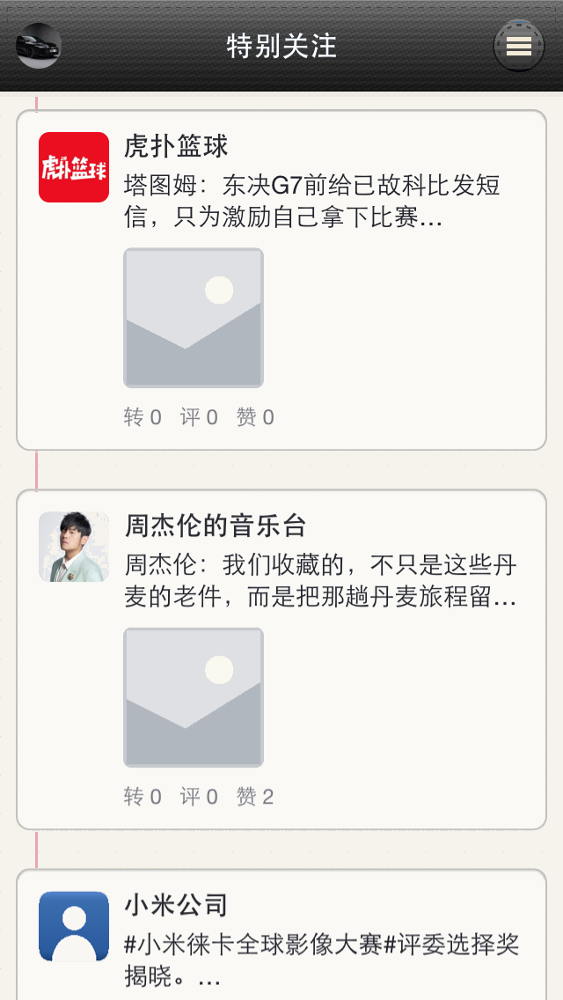

这次直接用当前 App 的最新真机截图做底图（顶部单标题 + 汉堡菜单 + 微博卡片，正文页 / 账号面板同款布局），只把导航条、背景、卡片换成三套系统皮肤的配色和纹理。布局、文字、头像、图片完全保持现状，你能直接看出换肤后的实际观感。点下方小链接可看正文页和账号面板的效果。
纯预览 · 未改任何产品代码
mockups/render_skins.py），只替换了导航条/背景/卡片三类皮肤色，其余像素（文字、头像、图片、按钮、缝线）原样保留，因此布局和你现在看到的 App 完全一致。